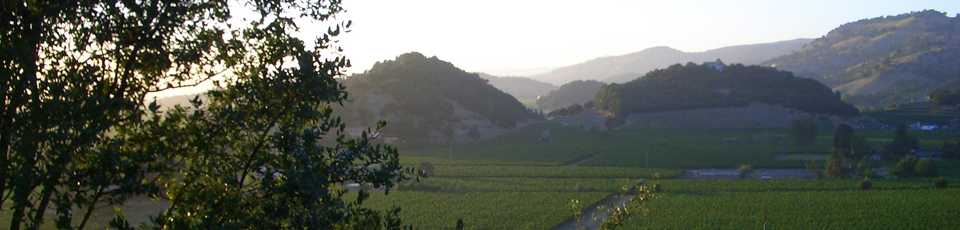

Press
- Winner, Best New Vineyard, Wine Fan magazine, December 2013
- Winner, Best Merlot, Wine Fan magazine, January, 2012
- Featured article, Wine Fan magazine, July 2011
- Winner, Best Cabernet, Wine Forever magazine, March 2009
- Winner, Wine of the Month: Cabernet Sauvignon, Wine of the Month Club, May 2008
- First Runner-Up, Best Merlot, Wine of the Month Club, June 2007
- First Runner-Up, Best Chenin, State of California Wine Club, July 2006
- Winner, Best Cabernet, State of California Wine Club, August 2005
- Winner, Best California Winery, Wine Taster magazine, September 2005
- Winner, Best Small U.S. Winery, Food, Wine, and Dine magazine, Dec 2005
- Featured article, WINELIFE, October 2005
- Winner, Best Winery, Food, Wine and Dine magazine, March 2004